Tutorial: avaliação de riscos psicossociais no Bevart, do link ao PGR
Abra uma avaliação anônima, envie o link, veja a exposição por fator e por ambiente e leve o risco ao inventário com plano de ação. Com telas reais.
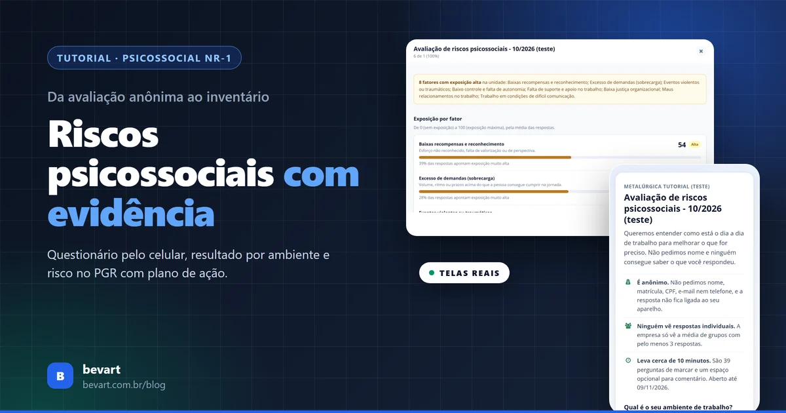
O essencial em 30 segundos
- A avaliação é por unidade e o resultado sai por ambiente (GHE), por setor ou da unidade toda. Por ambiente, o risco já entra no inventário no lugar certo.
- O funcionário responde pelo celular, sem nome nem CPF. Grupo com menos respostas que o mínimo definido não mostra resultado.
- Você escolhe quais fatores viram risco, ajusta a classificação, reescreve as medidas e registra: o risco entra no inventário, no PGR e no PCMSO, com plano de ação.
No Bevart, a avaliação de riscos psicossociais fica em Gestão Segurança > Avaliação Psicossocial e tem quatro movimentos: escolher o questionário, enviar o link, analisar o resultado e levar ao inventário. O que sai no fim é um risco do tipo Psicossocial no inventário, ligado aos ambientes de trabalho, com plano de ação e prazo.
Fizemos o fluxo inteiro numa conta de demonstração, com a empresa fictícia Metalúrgica Tutorial e dois ambientes (Torneiro mecânico e Auxiliar administrativo). As seis respostas foram enviadas pelo próprio link público, como faria um funcionário. Para entender por que a NR-1 cobra isso, leia como identificar riscos psicossociais com dados da empresa.
| Antes de começar | Detalhe |
|---|---|
| Nível | Básico. Cerca de 10 minutos para abrir a avaliação; o prazo de respostas é você quem define. |
| Cadastros | Unidade com setores, funções e ambientes (GHE). O tutorial do eSocial SST mostra esses cadastros. |
| Plano | Novas avaliações exigem assinatura ativa. |
| Responsável técnico | A classificação e a inclusão no inventário são decisão do profissional habilitado. |
Passo 1: escolha a unidade e abra uma nova avaliação
Ao entrar, a janela "Qual unidade?" pede a unidade avaliada. Depois clique em Nova avaliação. O topo mostra avaliações abertas, respostas, avaliações para analisar e riscos que já foram para o inventário.
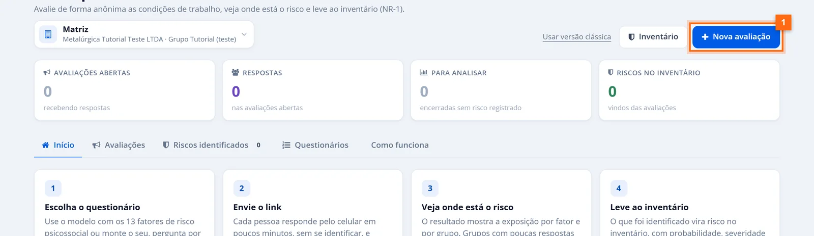
Passo 2: escolha o questionário
Na etapa Questionário, clique num questionário da conta ou comece por um modelo:
- Avaliação completa dos 13 fatores: três perguntas por fator e um espaço para comentário, cerca de 10 minutos (40 perguntas).
- Triagem rápida dos 13 fatores: uma pergunta por fator, cerca de 3 minutos (14 perguntas), para um primeiro levantamento ou para acompanhar entre avaliações completas.
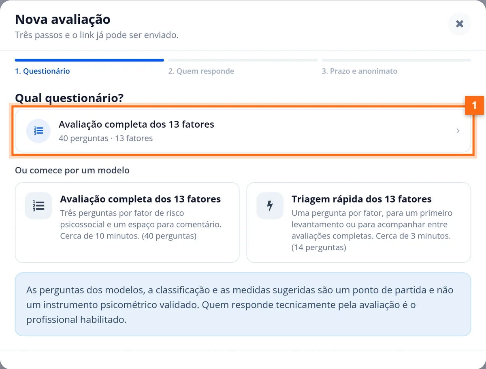
A própria tela avisa: as perguntas, a classificação e as medidas sugeridas são um ponto de partida, não um instrumento psicométrico validado. Quem responde tecnicamente pela avaliação é o profissional habilitado.
Passo 3: defina como separar os resultados
Na etapa Quem responde, escolha:
- Por ambiente (GHE), recomendado: o risco identificado entra no inventário já ligado ao ambiente. Por setor serve quando as pessoas conhecem melhor os setores; Unidade toda dá um resultado só, para unidades pequenas.
- Marque os grupos entre os quais a pessoa vai escolher. Separando, é preciso marcar pelo menos dois.
- Clique em Continuar.
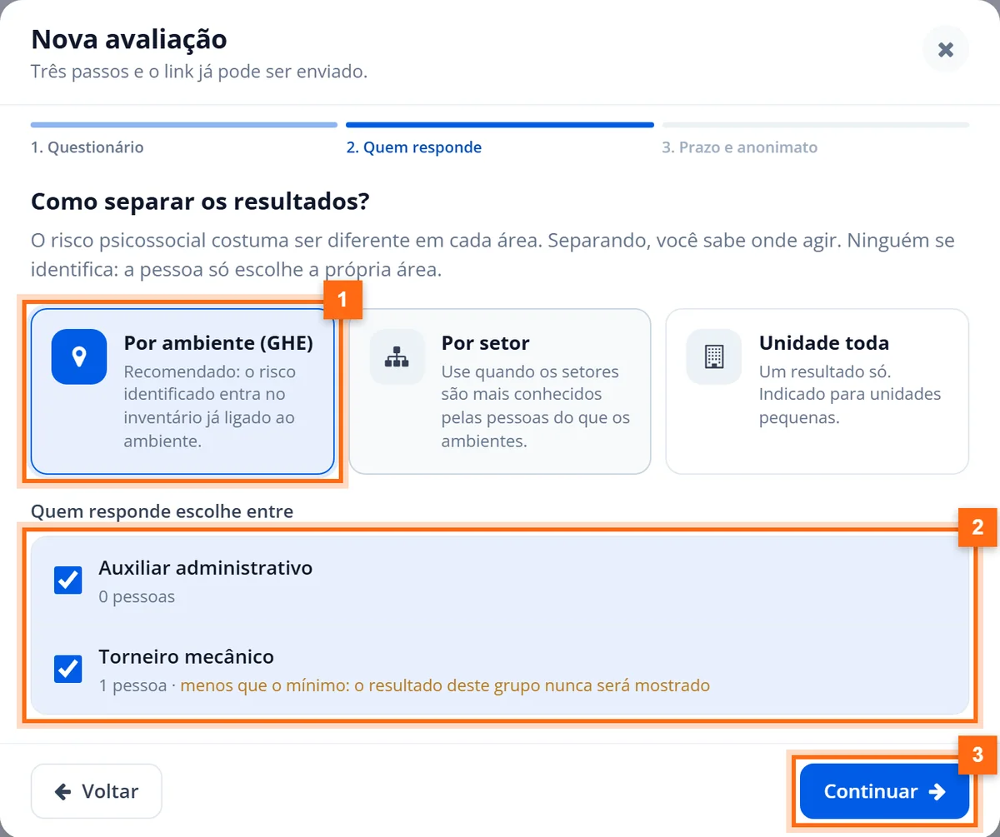
Passo 4: prazo e anonimato
- Título: aparece para quem responde.
- Aceita respostas até: a tela sugere duas a três semanas.
- Mínimo de respostas para mostrar o resultado de um grupo: 3, 5, 8 ou 10. Não dá para mudar depois de abrir.
- Como as pessoas entram: Link aberto (um link para todos) ou Códigos de uso único (você imprime e distribui ao acaso; garante uma resposta por pessoa).
- Mensagem de abertura: explique com as suas palavras por que a empresa está fazendo a avaliação.
- Clique em Abrir avaliação.
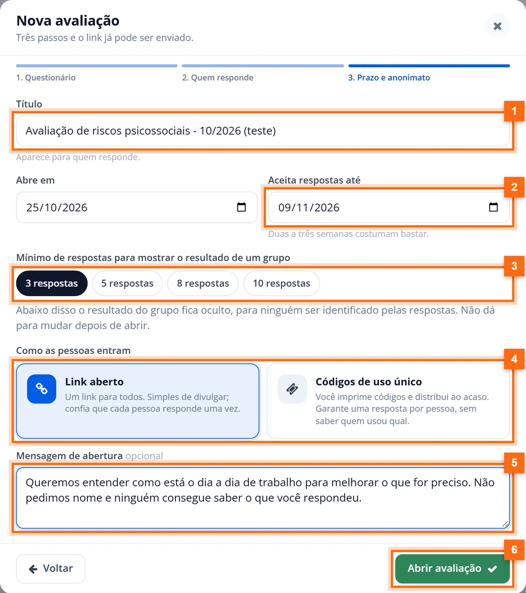
Com link aberto, o sistema confia que cada pessoa responde uma vez. Se você precisa garantir uma resposta por pessoa, use códigos de uso único.
Passo 5: envie o link e acompanhe a participação
Com o aviso "Avaliação aberta. Agora envie o link.", abre a ficha da avaliação. Use Copiar link ou Copiar convite pronto, que já traz texto, prazo e link. Ver como a pessoa vê abre o questionário como o funcionário.
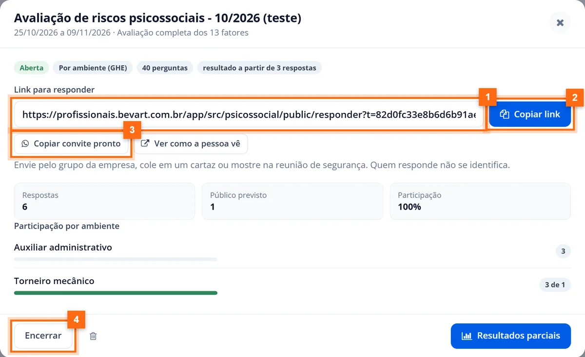
A ficha mostra respostas, público previsto e participação. A própria tela alerta que participação abaixo de 50% enfraquece o resultado.
Da percepção ao risco documentado no PGR
No Bevart, o fator identificado na avaliação vira risco no inventário, entra no PGR e no PCMSO e ganha plano de ação com prazo.
Criar conta grátisPasso 6: como o funcionário responde
Pelo link, a pessoa vê a mensagem de abertura e as garantias da tela: "É anônimo", "Ninguém vê respostas individuais" e o tempo estimado. Escolhe o próprio ambiente, toca em Começar e responde cada frase de Nunca a Sempre, em partes.
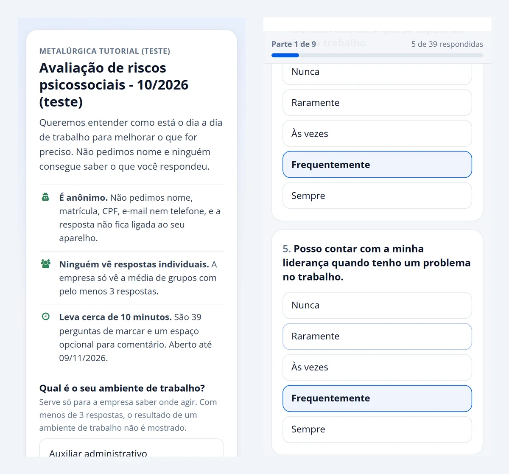
No fim há um espaço opcional para comentário, com o lembrete de não escrever nomes, e o botão Enviar respostas.
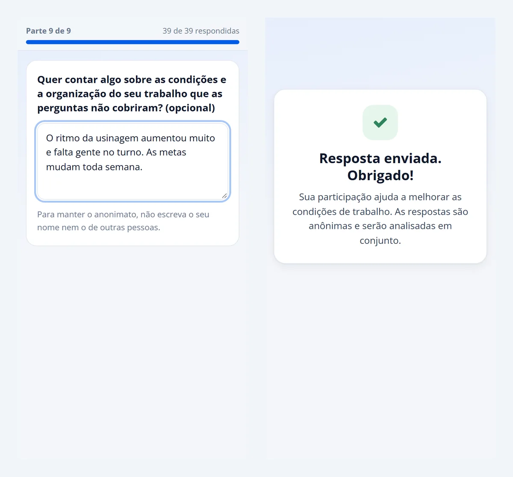
Passo 7: encerre e veja o resultado
Na ficha, clique em Encerrar e confirme. O link para de aceitar respostas (quem abrir vê "Avaliação encerrada") e você pode reabrir depois, com nova data final. Clique em Ver resultados.
O resultado começa pelo resumo dos fatores com exposição alta e segue com a Exposição por fator, de 0 a 100, com a faixa e o percentual de respostas que apontam exposição muito alta.
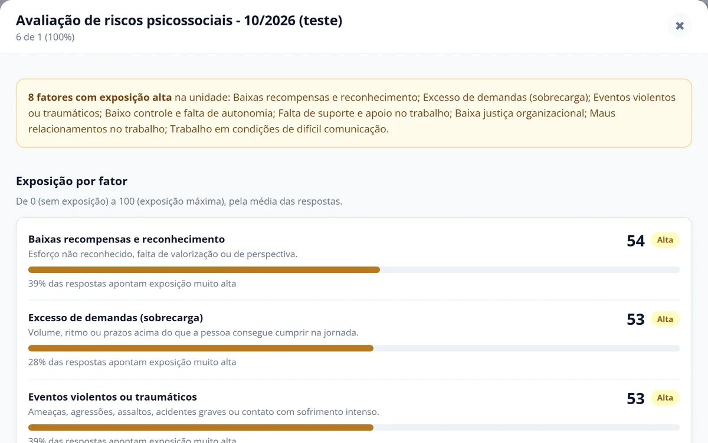
Em Onde está o risco, cada célula é a exposição do fator naquele grupo. É ali que aparece a diferença entre ambientes.
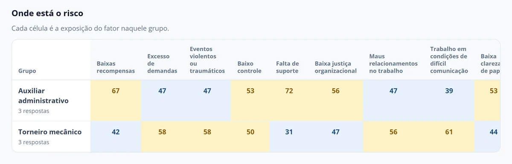
Depois vêm as Perguntas com maior exposição e os Comentários, mostrados sem setor e fora de ordem. No rodapé fica o botão Levar ao inventário de riscos.
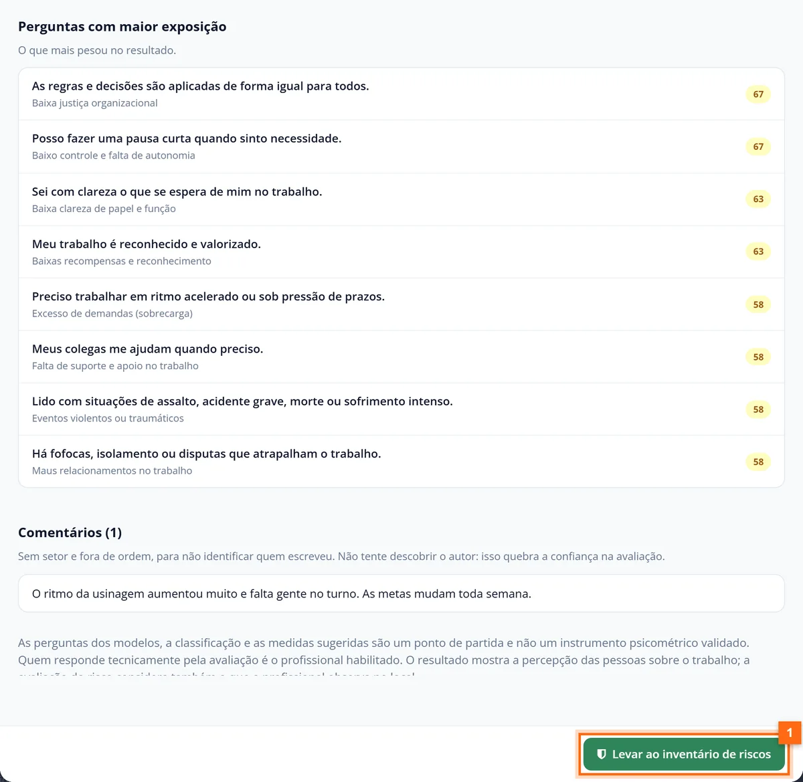
Passo 8: leve o risco ao inventário
O assistente tem três etapas:
- Fatores: aparecem os fatores com exposição moderada ou maior, por grupo, e os de exposição alta já vêm marcados. Desmarque o que não vai entrar. No tutorial deixamos só "Excesso de demandas (sobrecarga)" do torneiro, que bate com o comentário recebido.
- Classificação: a probabilidade sugerida vem da exposição medida e a severidade, do tipo de fator. Ajuste Probabilidade, Severidade e Nível de risco e marque Em quais ambientes (GHE) se aplica.
- Medidas: confira circunstâncias, possíveis agravos e reescreva as medidas de prevenção para a realidade da empresa (o quê, quem, até quando). Mantenha Criar plano de ação com estas medidas, defina o Prazo do plano, marque a declaração de revisão e clique em Registrar no inventário.
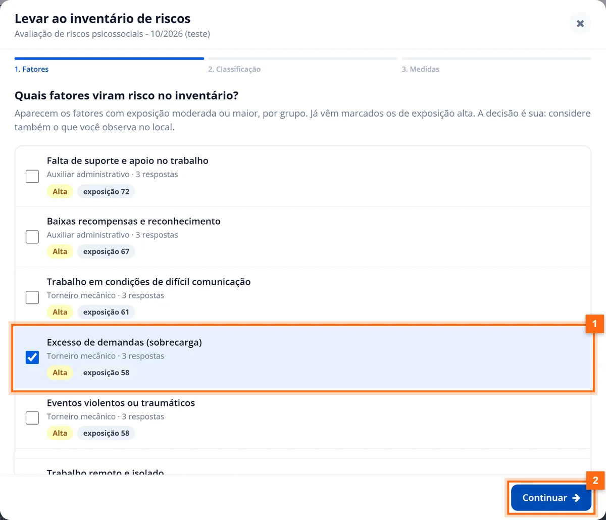
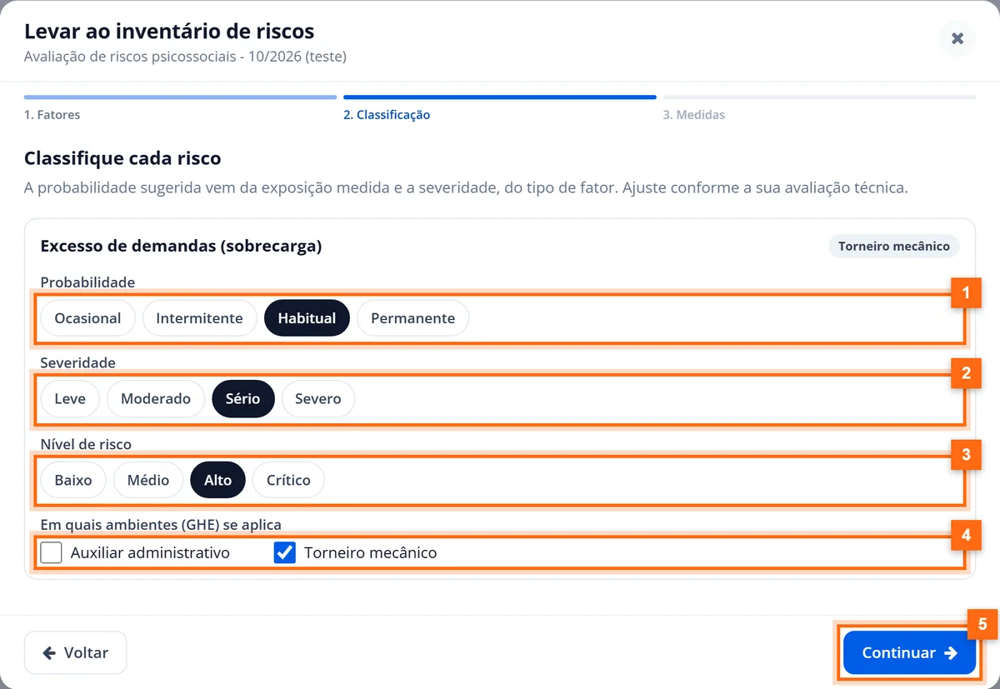
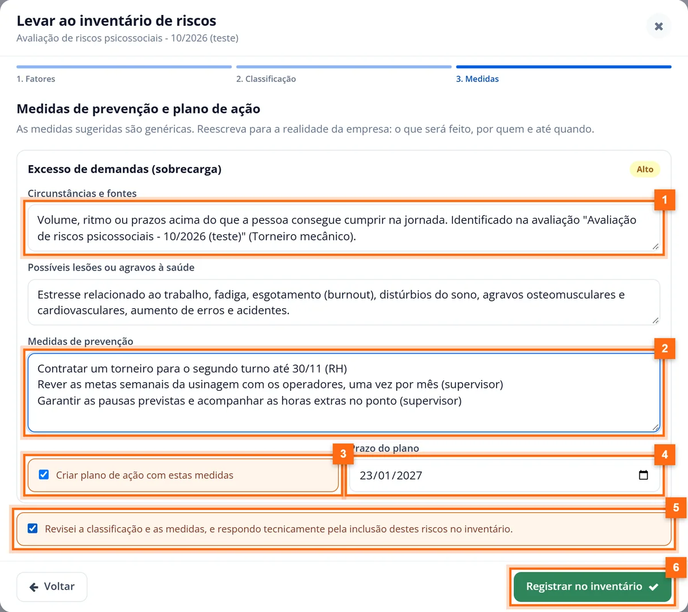
Resultado: a janela "1 risco no inventário" confirma "1 risco psicossocial incluído, ligados aos ambientes, com 1 plano de ação" e que ele entra no PGR e no PCMSO da próxima emissão.
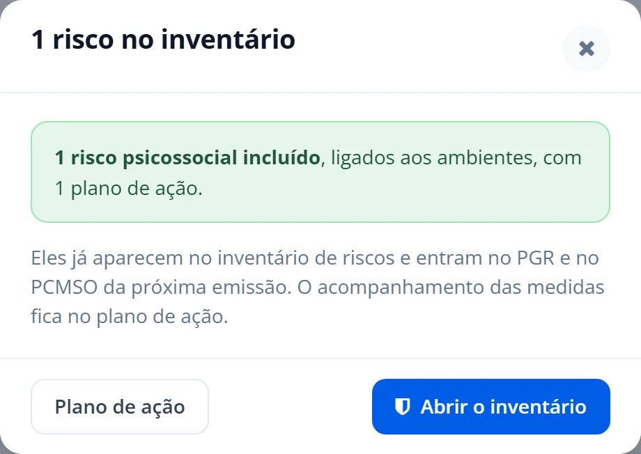
Passo 9: confira no inventário e acompanhe
A aba Riscos identificados lista os riscos vindos das avaliações, com nível, classificação e prazo do plano. No inventário da unidade, o risco aparece como Psicossocial, ligado ao ambiente, com PGR e PCMSO marcados. Para editar, use o inventário; para acompanhar as medidas, o plano de ação.
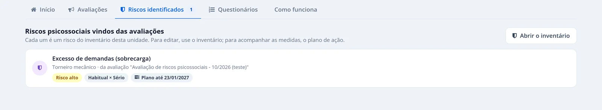
Resultado esperado
- Avaliação encerrada, com resultado visível nos grupos que atingiram o mínimo.
- Fatores escolhidos registrados como risco Psicossocial no inventário, ligados aos ambientes certos.
- Plano de ação criado com medidas e prazo.
- PGR e PCMSO da próxima emissão já com o risco.
Dicas e observações
- O questionário avalia condições e organização do trabalho, não a saúde mental das pessoas, e não serve para avaliar indivíduos.
- Resultado de um setor oculto significa poucas respostas. Reabra e reforce o convite, ou avalie setores pequenos junto com outros.
- Denúncias de assédio vão para o canal de denúncias. Se a unidade tiver o canal ativo, o link aparece para a pessoa no fim do questionário.
- Para exemplos de fatores na prática, veja metas excessivas como risco psicossocial.
Perguntas frequentes
A avaliação de riscos psicossociais do Bevart é anônima?
Sim. A resposta não pede nome, matrícula, CPF, e-mail nem telefone. A empresa só vê a média de grupos que atingiram o mínimo de respostas definido na abertura, e os comentários aparecem sem setor e fora de ordem.
Por que o resultado de um ambiente não aparece?
Porque chegaram menos respostas do que o mínimo definido. Com poucas respostas, a média permitiria identificar quem respondeu. Reabra a avaliação e reforce o convite, ou junte grupos pequenos.
O sistema define sozinho o nível do risco psicossocial?
Não. Ele sugere a probabilidade pela exposição medida e a severidade pelo tipo de fator. A classificação e a decisão de incluir no inventário são do profissional responsável, que marca uma declaração de revisão antes de registrar.
O que acontece quando levo o risco ao inventário?
É criado um risco do tipo Psicossocial no inventário da unidade, ligado aos ambientes marcados, com PGR e PCMSO assinalados, e um plano de ação com as medidas e o prazo.
Com o risco no inventário, o próximo passo é emitir o PGR atualizado. Veja como montar o PGR: inventário de riscos e plano de ação e a página de gestão de riscos psicossociais.